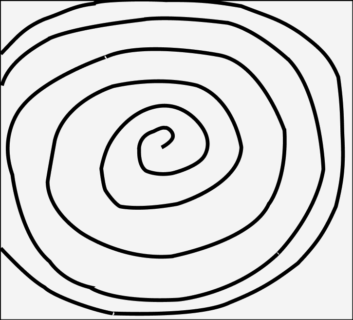
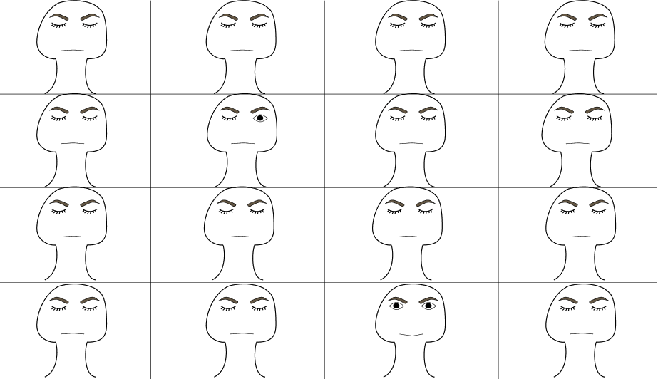
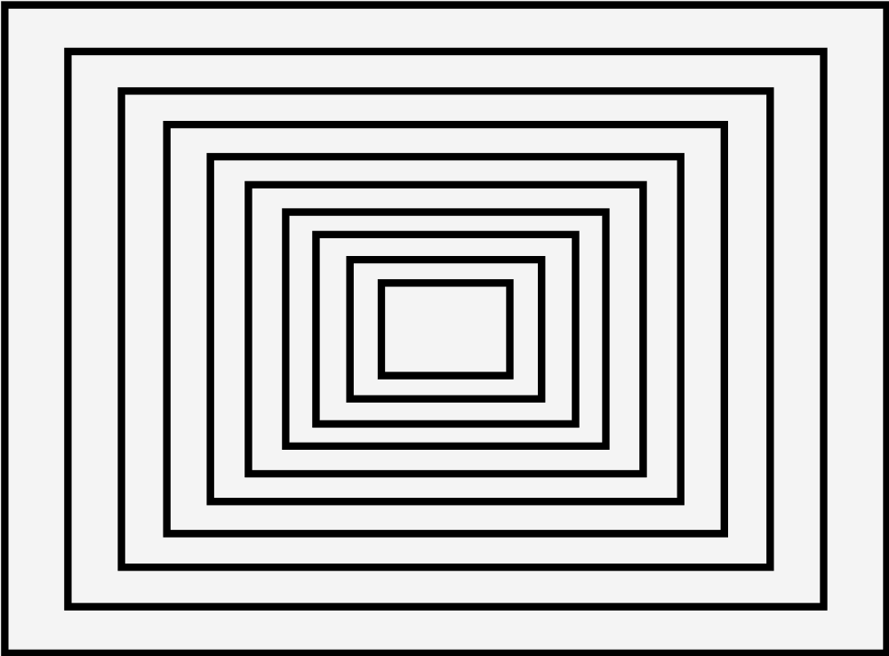

About me
My name is JJ and I’m an undergraduate student studying Digital Media at the University of West England.
This are the first few draft projects for my Graphic and Web design studio.
Graphic Compositions
These are the graphic compositions I created in figma using the Gestalt principles.

The Spiral composition
This graphic composition I made uses the Radial Gestalt Principle, more specifically the Spiral Focal point to try and imitate the feeling of being in a deep sleep.

The Odd one out composition
On this attemp I wanted to showcase the Gestalt Principle of Emphasis, as all the faces are asleep but one which is wide awake. I wanted to show how it stands out from the rest.

The Enclosing Room composistion
Here I tried creating an optical illusion of a room enclosing into the distance. I used the Space Gestalt Principle in order to help me portray this idea.
My Reflective essay
This Graphic and Web Design project challenged me in ways I was not expecting. At first I thought it would be straightforward as I had found using Figma relatively easy. It was not until we started using HTML that I started to feel it was no longer smooth sailing. Out of all of the modules I think I struggled with this one the most. The reasoning is mainly because I got complacent from the relative ease at the beginning. It was my fault and a mistake I will learn from and also maybe teach someone in the future what not to do. However this did not stop me from completing my work, as much as I believe I could have done more, I think I still like what I ended up with.
Things I enjoyed about this module was the designing aspect with Figma. It was a brand new software for me but it still felt very free and easy to use. I felt like I could perfectly display what I wanted to on the screen, even with my lack of creativity. As much as the HTML section was a little more difficult, I also enjoyed it too, it was learning a new skill of something that I was already interested in, which is programming.
Although I may not take web development as a future occupation I really do appreciate learning this skill at the very least.If I were to give any advice to someone who is starting Digital Media and more specifically Graphic and Web Design. I would say don’t be like me and get complacent after the first few weeks. You should always strive to do your best every opportunity you get, do that and you will have a lot more fun in this module.
In the end I would say I enjoyed this module even with the slight hiccups I had. I think I have learnt a lot of new skills that I can use for my future modules or even occupations. Looking back, there are things I would change but ultimately, I believe it was a success.